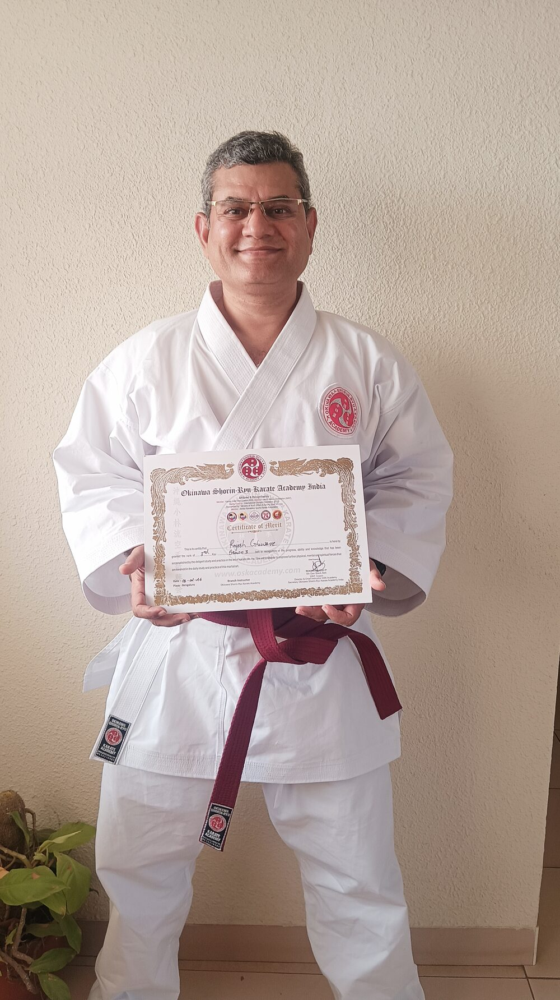
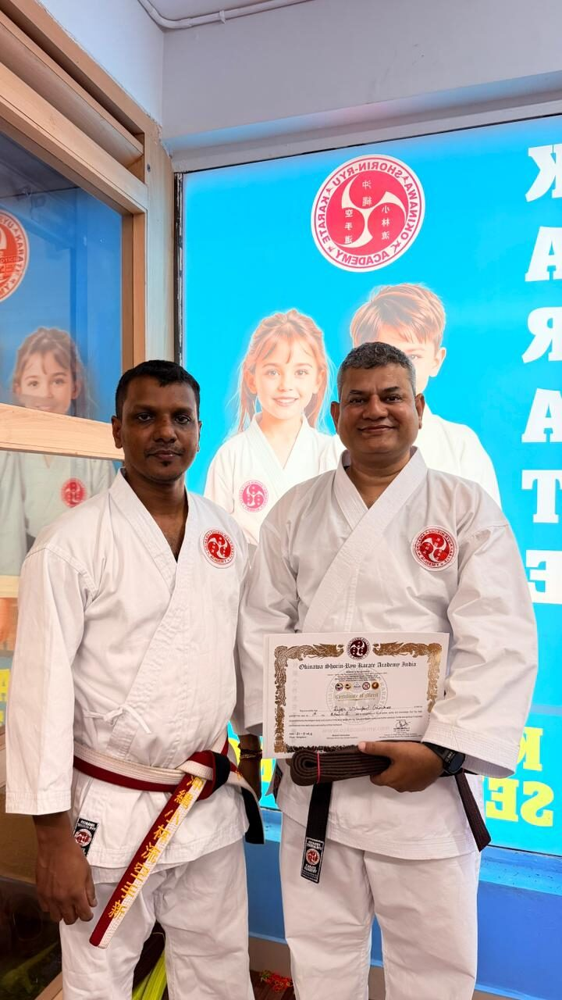

Okinawa Shōrin-Ryū · 沖縄少林流
A life-long study reference for the karate I am becoming —
from brown belt to black belt, and every day after.
Shin · Gi · Tai — Mind · Technique · Body
This is a personal reference, kept in the spirit of shoshin — beginner's mind. The Okinawan masters taught that kata is the textbook; bunkai is the lesson; and the dojo is the laboratory. Books, websites and seminars are only fingerprints of a much older oral tradition. This guide collects the fingerprints I will return to, so that on any morning I can revise a stance, recall a kata's intent, or rehearse a precept I have begun to forget.
It is built around the syllabus of OSK Academy — my school — and cross-referenced against the canonical Okinawan Shōrin-Ryū lineages: Kobayashi (Chibana), Shōbayashi (Kyan / Seibukan), and Matsubayashi (Nagamine). Where lineages disagree on a count or a movement, that disagreement is preserved — because the disagreement itself is part of the tradition.
"Karate ni sente nashi." — There is no first attack in karate. — Anko Itosu (and after him, Funakoshi and Nagamine)
A Shōrin-Ryū practitioner trains across eight intersecting domains. Walk any of them long enough and you will arrive at the others.
基本 · Kihon
Stances, punches, kicks, blocks. The grammar from which every kata sentence is built. Conditioned daily; never outgrown.
Open kihon型 · Kata
From Fukyū to Kūsankū — a complete progression of the school's kata, with embusen, key techniques, and bunkai notes for each.
Open kata組手 · Kumite
From kihon ippon to jiyū kumite. Distance (ma-ai), timing, and the nine target zones. Sport scoring and traditional applications.
Open kumite古武道 · Kobudō
Bō, sai, nunchaku, and tonfa — the Ryūkyū farmer-noble's arsenal, refined into kata that sharpen the empty-hand body.
Open kobudō歴史 · Rekishi
Matsumura, Itosu, Chibana, Kyan, Nagamine. The dōjō kun. Reigi (etiquette). The three branches of Shōrin and how OSK draws from them.
Open history用語 · Yōgo
The Japanese vocabulary of the dōjō. Counting, body parts, commands, technique names — bilingual reference card for life.
Open terms道程 · Dōtei
The personal road map: gap analysis from 1st kyū, weekly training plan, conditioning, mental preparation, the grading day itself.
Open roadmap審査 · Shinsa
What the test actually contains: kihon, all required kata, bunkai, kumite gauntlet, kobudō, oral history, and the written essay.
Open exam guideTen ranks from white to black. Started Jan 2, 2025; eight kyū grades earned across three grading days; current rank brown 1 (9th rank, 1st kyū), awarded May 31, 2026 — the top of the brown ladder. Only shodan remains, with the test at the end of November 2026.
"Shodan" 初段 means "first step," not "highest rank." It is the door to serious training, not a graduation. Most who reach shodan have walked four to six years; the road continues for life.
Eight kyū grades earned across three examinations — the senseis pointing to an endurance-sports background (high-altitude trekking, long-distance cycling) as the conditioning that let the whole brown ladder come within reach inside seventeen months.
First grading — 10 August 2025
Yellow + Blue + Purple awarded together. 8th → 6th kyū. Receiving the certificate from Renshi Sajesh P.

Second grading — 8 February 2026
Green + Brown 4 + Brown 3 (Sankyū) awarded together. 5th → 3rd kyū — the brown ladder begins.

Third grading — 31 May 2026
Brown 2 + Brown 1 (Ikkyū) awarded together. 2nd → 1st kyū — the brown ladder complete.
Full timeline with phase plan from here to shodan: roadmap →
Recited at the close of every class, in seiza, with hands on thighs and eyes closed. Each line begins with 一 ("Hitotsu" — "one") to mark them as equal in rank.
The deeper text — history of the precepts, Itosu's Ten Precepts (1908), Funakoshi's Niju Kun, and Nagamine's Seven Principles — is on the history page.
All Shōrin-Ryū descends from Sōkon "Bushi" Matsumura through Anko Itosu. In the 20th century three lineages took distinct names — using nearly the same kanji.
Full bios, dates, and the longer transmission tree are on the history page.
Open Kihon before practice. Pick one stance, one strike, one block — drill them with focus, not volume.
Cycle through the kata page. Read the bunkai for a single kata; on the floor, perform it three times — once for shape, once for breath, once for application.
Where this guide and OSK Academy disagree — OSK is right. Numbers, sequences, and grading expectations are set by Renshi Sajesh and Kyoshi Chandran, not by the internet. Use this site to study between classes; use class to correct the site.